Enough work. Not enough capacity.
Dealer Group A · fictional · multi-brand · EV & hybridDealer Group A had three sites and 24 bays. Maintenance slipped, and during the seasonal tyre change wheel work and diagnostics competed for the same bays. Customers waited longer and some work went elsewhere.
AMPS proposed a programme starting at one site: deliver agreed maintenance and wheel-service work, document every step digitally and improve month by month. An AMPS programme lead aligned scope, work allocation and quality checks with the aftersales manager.
No leap. A route built on evidence.
Five milestones. Each one starts when the previous one has delivered its outcomes. Select a milestone.
Choose the right task. Not just a robot.
In the baseline, wheel work stood out: repeatable, with recognisable variants and recurring peaks. That made it a better first candidate than complex EV diagnostics or unpredictable repairs.
The robot does the repeatable work. The technician stays in control.
The chosen application: removing and refitting complete wheel sets on a limited number of supported vehicle and wheel combinations. Not an autonomous service floor, one controlled part of the process.

The gain is in time. And it grows.
Explicit model assumptions for one pilot site. Not client measurements, supplier claims or promised savings.
Helped today. Better organised tomorrow.
Where does the next step start on your service floor?
Start with the work that is waiting today. Then decide which data, process improvement and technology really add value.